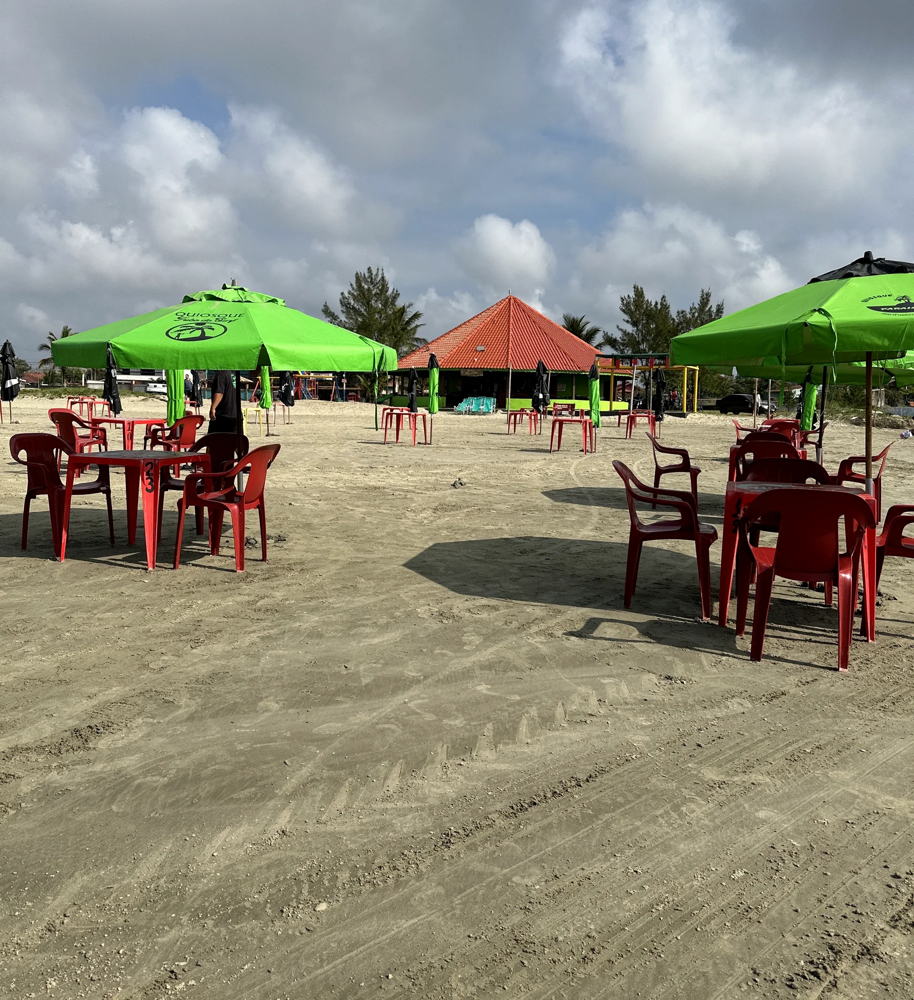
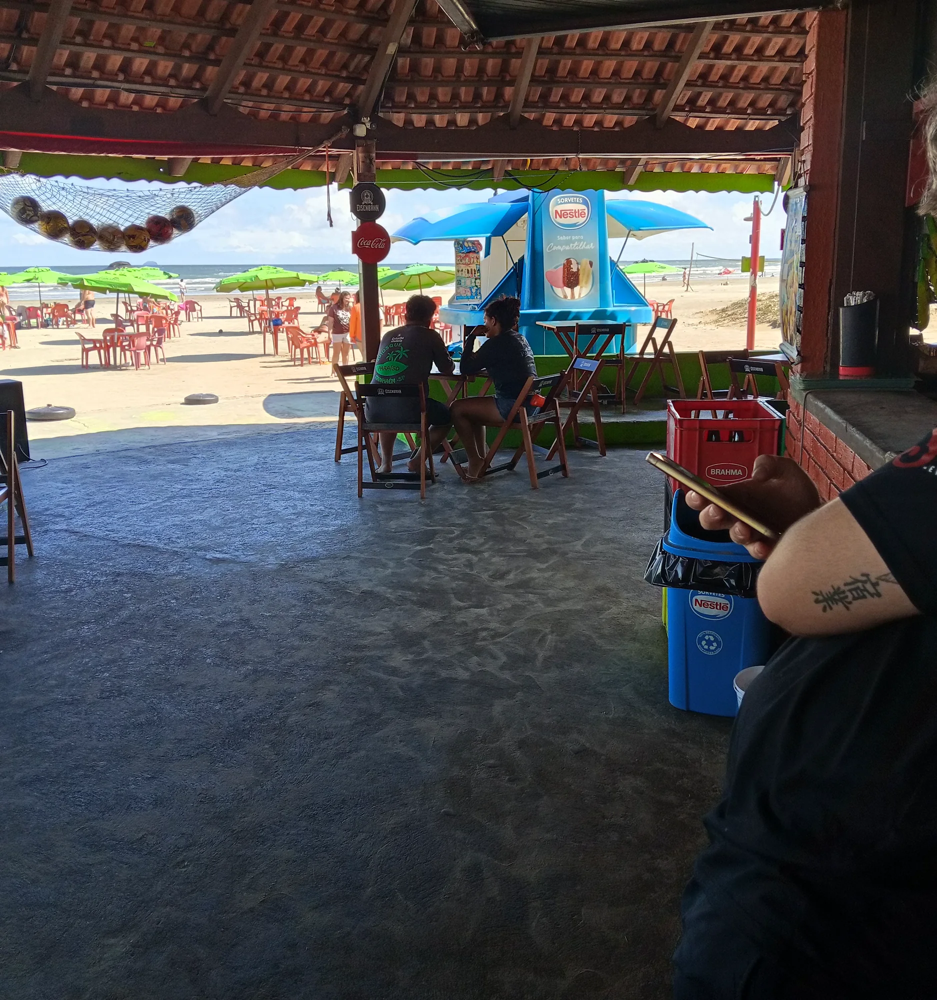
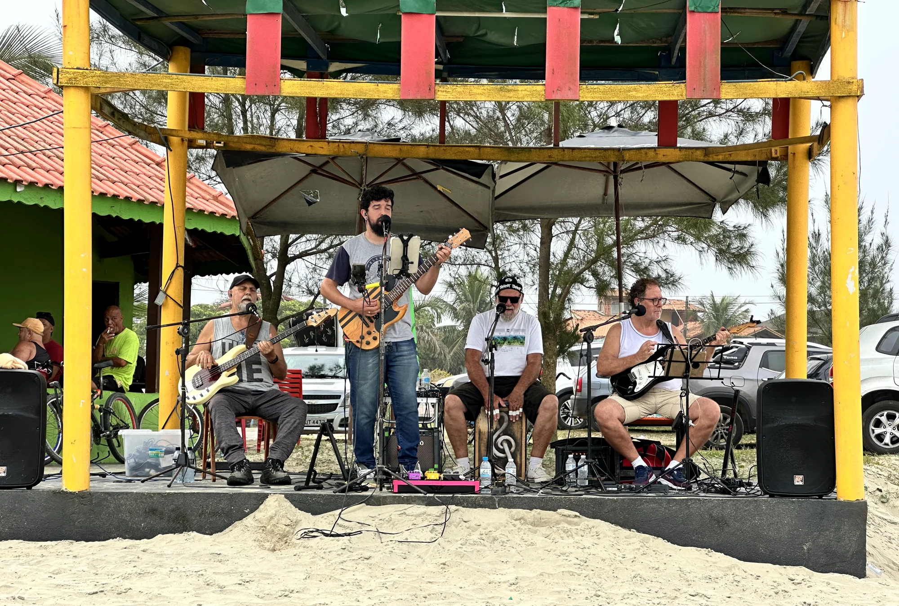

Porções, Petiscos & Almoço
Porções de peixe, camarão, fritas, calabresa, pastéis crocantes na hora, salgados e pratos de almoço.

Porções caprichadas, almoço, cerveja trincando, guarda-sóis na areia sem consumação mínima e roda de samba aos domingos.
Atendimento direto na areia ou na área coberta, com ambiente familiar na orla do Tupy / Cibratel.
Porções de peixe, camarão, fritas, calabresa, pastéis crocantes na hora, salgados e pratos de almoço.
Cervejas trincando no balde, caipirinhas, batidas tropicais, água de coco, sucos e refrigerantes.
Mesas e guarda-sóis verdes na areia + salão coberto com banheiros limpos, sinuca e acessibilidade.
Apresentações musicais de frente para o mar e a tradicional roda de samba aos domingos no Tupy.
Deslize no celular para ver a estrutura coberta, o palco na areia e a vista para o mar.


Fotos reais registradas por clientes e equipe no Google Maps do Quiosque Paraíso.
Escolha onde prefere sentar e quantas pessoas vêm. A mensagem já vai pronta para o Rodrigo e equipe.
Olá, Rodrigo! Vim pelo site do Quiosque Paraíso. Quero consultar disponibilidade de Mesa na areia (guarda-sol) para 4 pessoas (Porções e petiscos, Cerveja e drinks).
“Um dos melhores Quiosques de Cibratel. Ótimo atendimento, bons preços e Samba aos domingos.”
“Ótimo lugar, pessoal bem atencioso, preço acessível, ótimo atendimento, recomendo super e não tem preço mínimo de consumação.”
“Eu amo esse quiosque. O Rodrigo e seus funcionários são excelentes.”